Cadastre seu primeiro FII
Na primeira abertura, toque em Começar sem conta para montar uma carteira nova. Se você já usava o app, escolha Recuperar meus dados.
- Na carteira, toque em + para abrir Cadastro de Transação.
- Informe o Código do FII e selecione Compra.
- Informe o Valor Unitário, a Quantidade de cotas e a Data da transação.
- Toque em Salvar, abaixo da data, e aguarde a confirmação.
Use a ajuda (?) ao lado dos campos se tiver dúvidas. A data e a quantidade registradas entram no cálculo do histórico e dos dividendos.
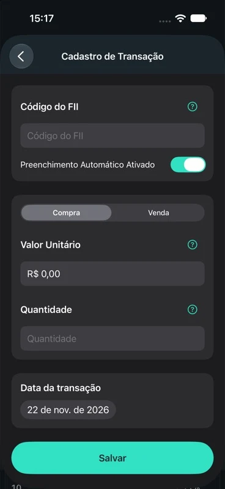
Painéis da carteira e dos FIIs
Na área de resumo da carteira, deslize o painel para os lados ou use os pontos de navegação. Você pode acompanhar rentabilização, evolução, remuneração, yield, dividendos, distribuição e transações.
Abra um FII para consultar os painéis da posição individual, como cotações, extrato, últimos dividendos e informações do fundo. Quando houver uma oferta cadastrada, o detalhe também pode mostrar Subscrição.
Toque em ? no painel para entender os valores e controles daquela visão. Os gráficos e listas têm rolagem própria quando o conteúdo ultrapassa a área visível.
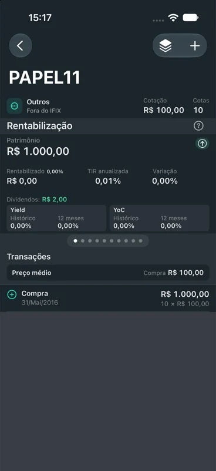
Gráficos, extratos e exportação
- Extrato e últimos dividendos. Role o conteúdo da lista para consultar as datas e os valores disponíveis. O extrato usa as datas de pagamento.
- Transações. Acompanhe compras e vendas dos últimos 12 meses na carteira. Para consultar os seus lançamentos de um FII, abra o detalhe e role a lista de transações.
- Yield e YoC. Quando o gráfico mostrar as duas opções na legenda, toque na série que deseja ver. Yield acompanha a base de cotação. YoC (Yield on Cost) usa o custo da posição.
- Distribuição. Use o gráfico e a legenda para relacionar os setores às participações dos FIIs ou segmentos.
Para exportar os dados, abra Menu → Mais FIIS → Excel App FIIS. Use as planilhas de Extrato e Transações para consultar o histórico disponível fora do app.
Exibição · Visão
Abra Menu → Exibição → Selecionar Visão, escolha uma opção e toque em Salvar. O botão ? abre os detalhes de cada opção.
- Dividendo Yield
- Exibe o último dividendo, valores acumulados e o gráfico de yield do FII.
- Rentabilidade
- Exibe investimento, preço médio, comparação com a cotação e histórico de preços.
- Recomendados
- Compara a participação real com a participação e a cotação definidas nas carteiras de referência.
- Gráfico Yield
- Prioriza o gráfico histórico. No iPad em tela ampla, use o gráfico da visão Dividendo Yield.
- Compacta
- Mostra mais FIIs na tela. Toque no código de um FII para abrir as informações completas.
Para mudar apenas um cartão, toque no controle de visão ao lado do código daquele FII.
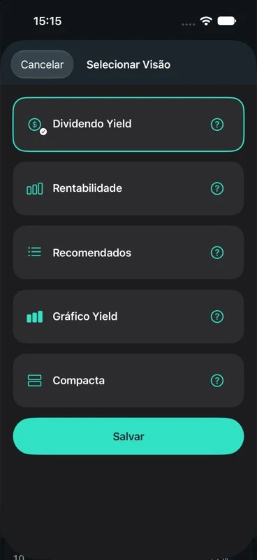
Exibição · Ordenação
Abra Menu → Exibição → Selecionar Ordenação e toque em Salvar após escolher.
- Ordem FIIS
- Organiza por código de negociação, de A a Z.
- Ordem Segmento
- Agrupa os FIIs por segmento.
- Ordem Dividendos
- Agrupa os FIIs pela data de pagamento dos dividendos.
- Ordem Rentabilidade
- Ordena pelo resultado percentual da posição, do menor para o maior.
- Ordem Recomendados
- Agrupa por carteira recomendada e mostra os demais em Sem Recomendação.
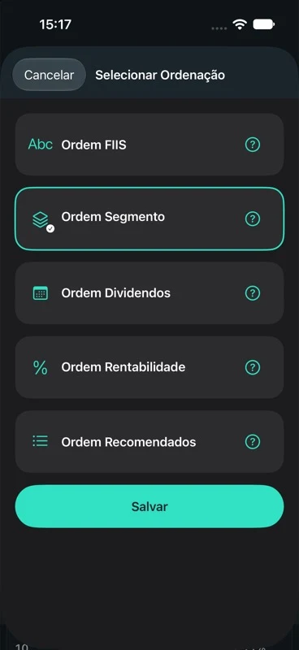
Carteira no iPhone e no iPad
No iPhone, o resumo e a lista compartilham a tela. No iPad com espaço suficiente, os painéis e a lista podem aparecer lado a lado. A orientação e o espaço disponível determinam quanto conteúdo cabe em cada painel.
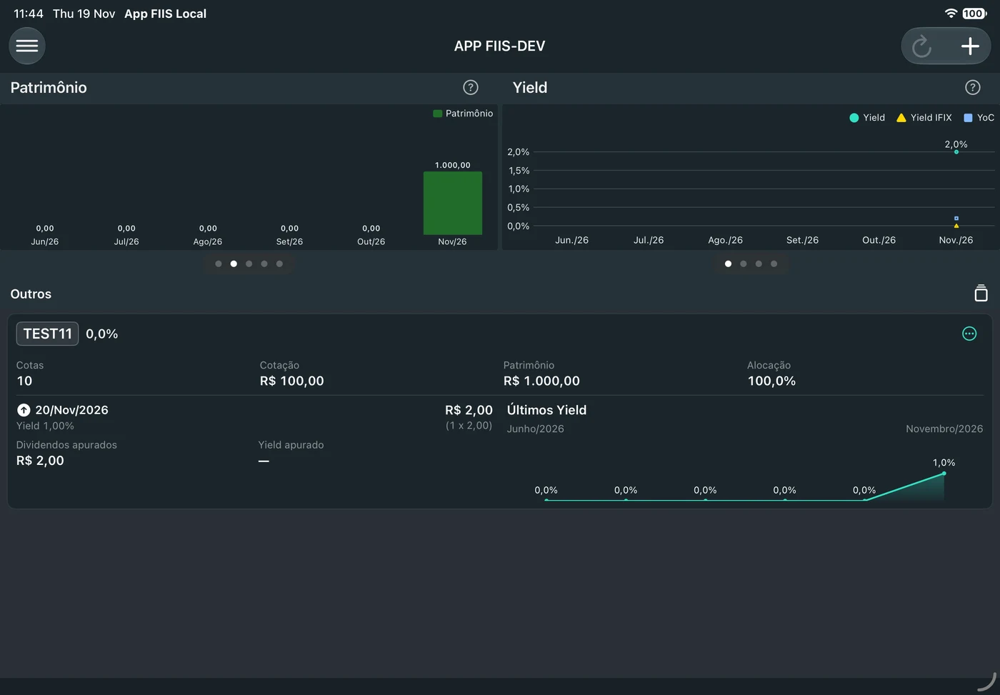
Lista FIIS
Abra Menu → Mais FIIS → Lista FIIS para pesquisar fundos pelo código, navegar por segmentos e consultar o histórico disponível.
- Encontre o fundo pela busca ou na lista.
- Veja os gráficos de dividendos e cotações no próprio cartão. Toque na estrela para adicionar o fundo aos favoritos e use o filtro de favoritos no topo da tela.
- Use o botão de comparação no cartão para colocar o FII na primeira ou na segunda série do gráfico. Ajuste o intervalo quando o histórico estiver disponível.
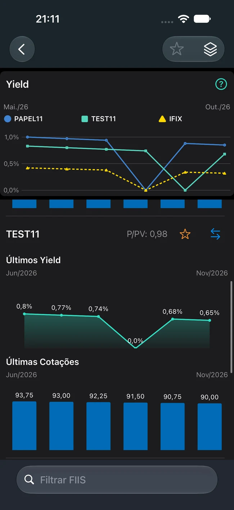
Carteiras recomendadas
Abra Menu → Mais FIIS → Recomendação. Você pode montar até três carteiras de referência, chamadas inicialmente Conservador, Moderado e Agressivo. Para renomeá-las, use a opção de edição dos nomes na tela de Recomendação. Os nomes têm de 3 a 15 caracteres.
- Toque em +, informe o código do FII e escolha a carteira de referência.
- Preencha a cotação recomendada. Use R$ 0,00 quando não definir preço de referência.
- Defina o peso do FII e salve. Para editar uma recomendação ou movê-la entre carteiras, abra o FII na lista de recomendações.
A participação é o peso do FII dividido pela soma dos pesos da carteira. Se os pesos forem 20 e 10, as participações serão aproximadamente 67% e 33%. Os gráficos usam essas participações para mostrar o yield da carteira e a distribuição por segmento.
Na carteira principal, use a visão Recomendados para comparar sua alocação com a referência.
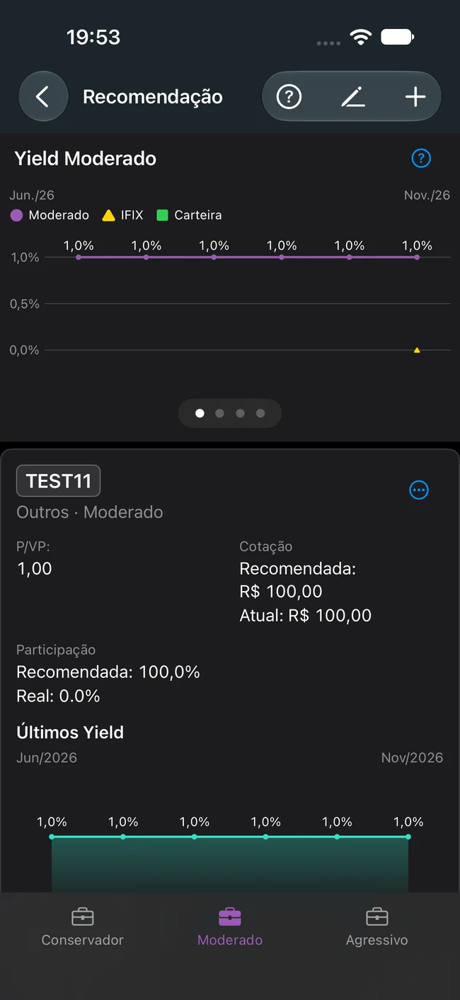
Data-base e data de pagamento
A data-base, também chamada de data-com, determina quais cotas dão direito ao dividendo. A data de pagamento é quando o fundo paga o valor declarado.
Exemplo com datas em meses diferentes
- 28/02 · Data-base
- As cotas que você tinha nessa data determinam o direito ao dividendo.
- 14/03 · Pagamento
- O valor aparece em março no extrato. O gráfico por data-base o atribui a fevereiro.
Se vender depois da data-base, você continua com direito ao dividendo declarado para aquelas cotas. Os totais do mês nos gráficos podem mudar à medida que os fundos anunciam novos dividendos.
Subscrição
Quando há uma subscrição cadastrada para um dos seus fundos, um ícone sinaliza a oferta na carteira. Abra o FII e navegue até o painel Subscrição para consultar os detalhes.
- Data-base
- Data usada para identificar os cotistas com direito de preferência.
- Período de preferência
- Janela em que o cotista pode exercer o direito.
- Valor e fator
- Preço informado por nova cota e proporção usada para calcular a quantidade elegível.
- Data limite
- Prazo informado na oferta. Confira com sua corretora se há um prazo operacional anterior.
Para participar, consulte o comunicado do fundo e siga as instruções da corretora. Você pode ativar os avisos em Notificações.
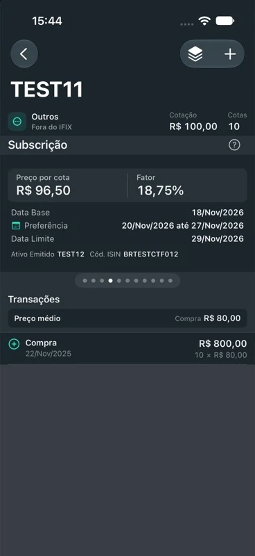
Mudança de código de um FII
- Na carteira, localize o FII que indica uma mudança de código.
- Abra as ações do cartão e toque em Renom. ou na opção de transferência quando o código novo já existir na carteira.
- Confira os códigos antigo e novo, confirme e aguarde o resultado. O app transfere os lançamentos do FII para o novo código.
Agrupamento e desdobramento
Um desdobramento aumenta a quantidade de cotas e reduz o preço unitário na mesma proporção. Um agrupamento faz a operação inversa.
- Localize um FII com ajuste disponível, abra as ações do cartão e toque em Ajuste para abrir Ajuste de Cotas.
- Selecione o evento e confira o fator, a data limite e a prévia dos valores de cada transação.
- Selecione as transações que deseja ajustar, toque em Ajustar e aguarde a confirmação.
Transações já processadas ficam identificadas. Se o agrupamento gerar uma fração, siga o aviso de revisão manual e confira o tratamento da fração com a corretora antes de editar o lançamento.
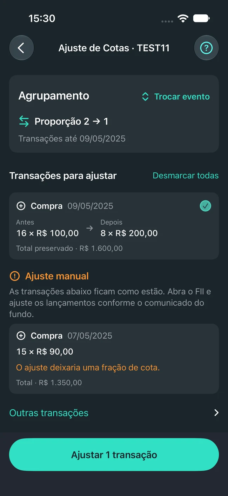
Login e recuperação da carteira
Se começou sem conta, abra Menu → Configuração → Efetuar Login e entre com Apple ou Google. Isso vincula seus FIIs e suas transações à conta que você usará para recuperar os dados. No Login com Apple, você pode escolher Ocultar Meu E-mail.
Em outro iPhone, iPad ou após reinstalar
Na primeira abertura, toque em Recuperar meus dados. Selecione o mesmo provedor e a mesma conta usados anteriormente. Se já houver outra sessão aberta, entre na tela de login para verificar qual conta está em uso antes de sair.
Face/Touch ID
Ative Menu → Configuração → Face/Touch ID para pedir autenticação do dispositivo ao voltar ao app. O bloqueio protege o acesso neste aparelho. Use o login para recuperar a carteira em outro dispositivo.
Deletar conta
Se quiser apagar a conta, use Deletar Conta na tela de login, leia a confirmação e acompanhe o andamento. Para trocar de conta, use a opção de sair.
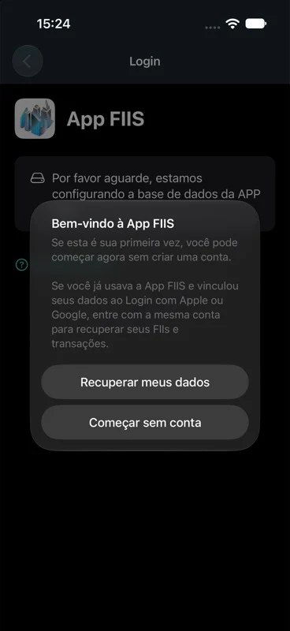
Notificações
- Abra Menu → Configuração → Notificações.
- Ative as notificações e permita que o App FIIS envie alertas quando o iOS perguntar.
- Escolha o horário e quais avisos receber, como Dividendos e Subscrições. Use o Modo Silencioso para receber avisos sem o som.
Se as notificações estiverem bloqueadas, revise a permissão do App FIIS nos Ajustes do iOS. O horário escolhido é uma preferência. O momento da entrega pode variar conforme as condições do dispositivo.
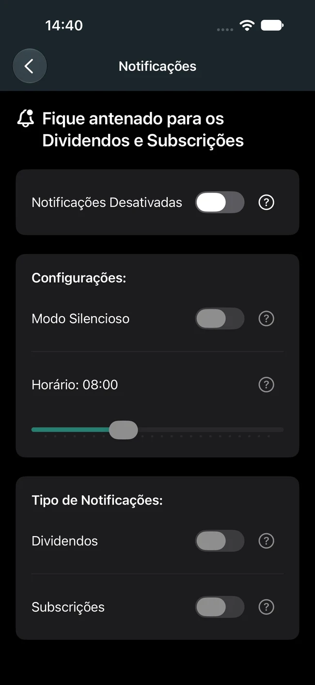
Calendário
Abra Menu → Configuração → Calendário, ative a integração e conceda a permissão solicitada pelo iOS. O App FIIS cria e atualiza os eventos de pagamentos futuros em um calendário próprio.
Se os eventos não aparecerem, confira se há dividendos futuros na carteira, se o app tem a permissão necessária nos Ajustes e se o calendário do App FIIS está visível no app Calendário. A tela de integração informa quando o acesso está bloqueado.
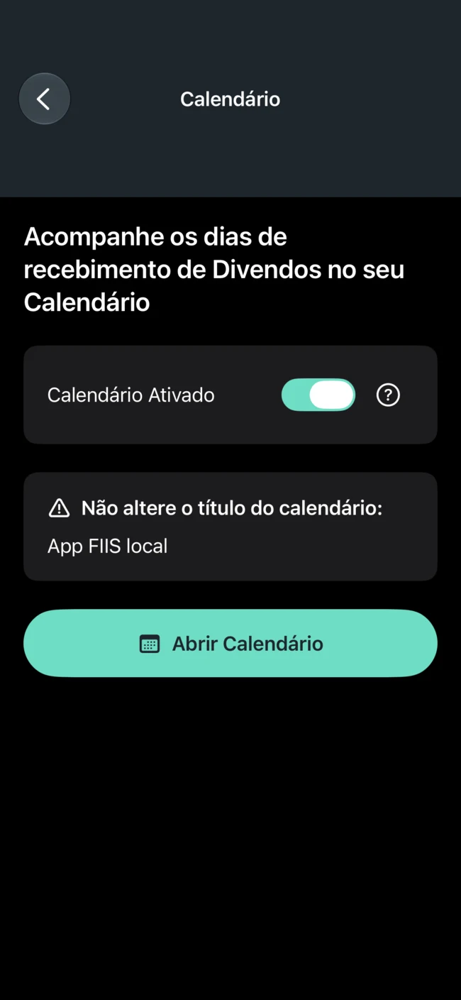
Cadastro ilimitado
Ao atingir o limite gratuito de FIIs, o app oferece a liberação de Cadastro Ilimitado. É uma compra única pela App Store que também libera o cadastro de mais FIIs nas carteiras recomendadas.
Você pode abrir a oferta em Menu → Shopping → Cadastro Ilimitado. Se já comprou, escolha Restaurar Compra com a mesma Conta Apple usada na compra.
Sobre e solução de problemas
Contate o suporte
Abra Menu → Suporte → Sobre App FIIS para conferir a versão, ler a Política de Privacidade ou usar Enviar e-mail. Ao relatar um problema, indique a tela e o passo em que ele ocorreu.
Se precisar reinstalar
No iOS, abra Ajustes → Geral → Armazenamento, selecione App FIIS e toque em Apagar App. Reinstale pela App Store, toque em Recuperar meus dados e entre com a mesma conta. Revise também as preferências de notificações e calendário.
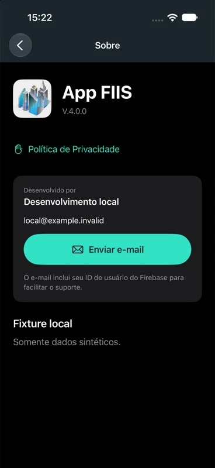